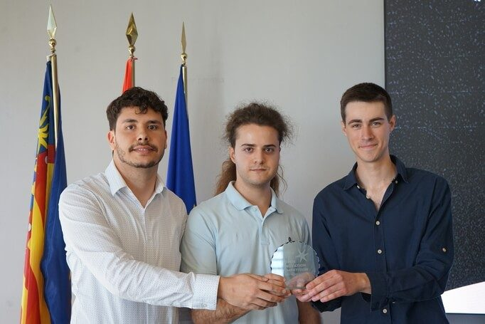
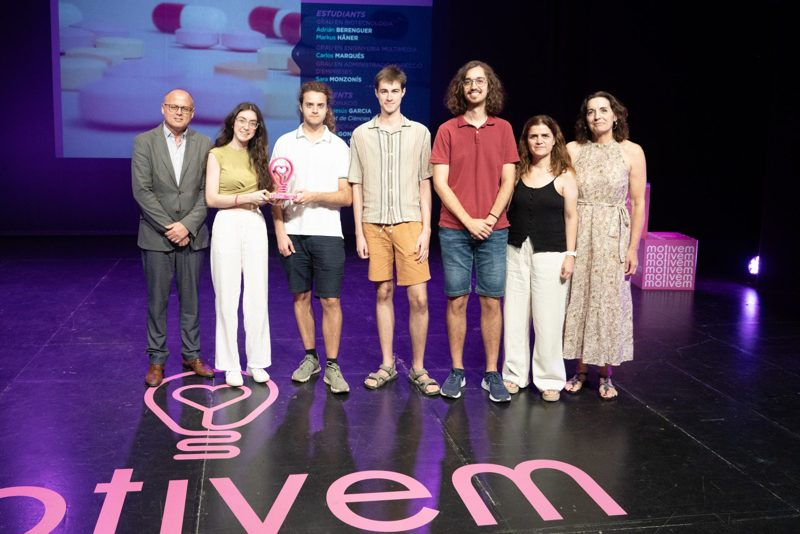
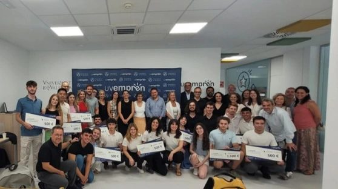
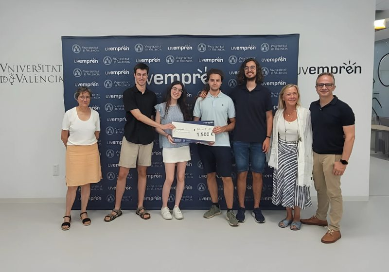
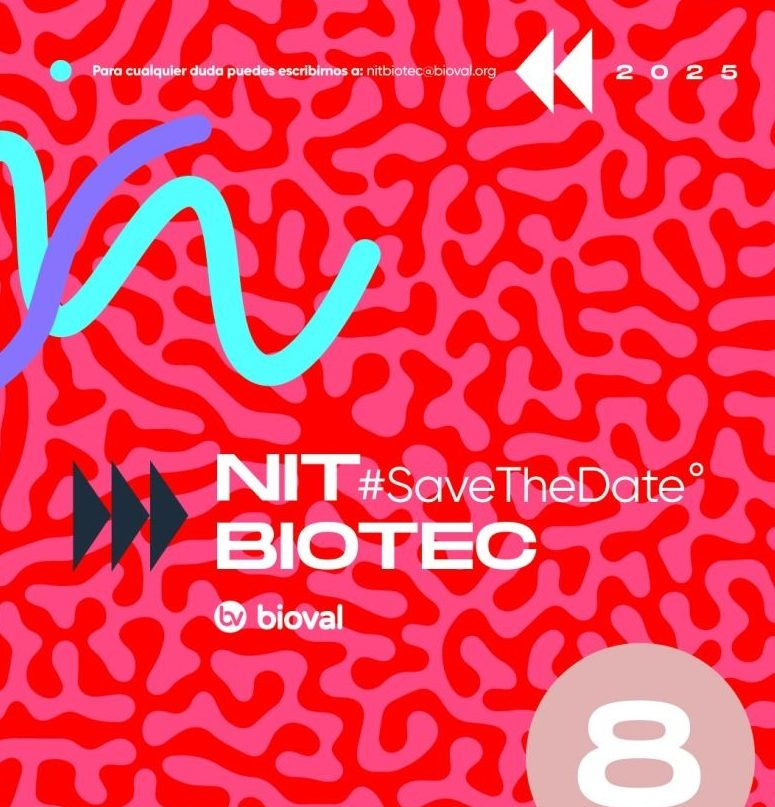

Noticias
Lo último de Kyobac Labs.
Premios, presencia en medios e hitos del proyecto.

Ganador
Kyobac Labs gana la Open Innovation Competition de 2026
La II Competición de Innovación Abierta en bioeconomía reconoce el proyecto de Kyobac Labs.
Leer noticia
Prensa
Un posbiótico antiinflamatorio reduce los niveles de estrés sin efectos secundarios
Leer noticia

Premio
Premios Motivem 2025: mejor proyecto de ciencias de la Universitat de València
Leer noticia

Ganador
Mejor proyecto emprendedor de la Universitat de València 2025
Leer noticia

Talento
Reconocimiento al mejor proyecto emprendedor por la Facultad de Economía
Leer noticia

Finalista
Adrián Berenguer, finalista como Joven Talento en Biotecnología
Leer noticia
¿Eres periodista?
Escríbenos para entrevistas, imágenes o información sobre el proyecto.